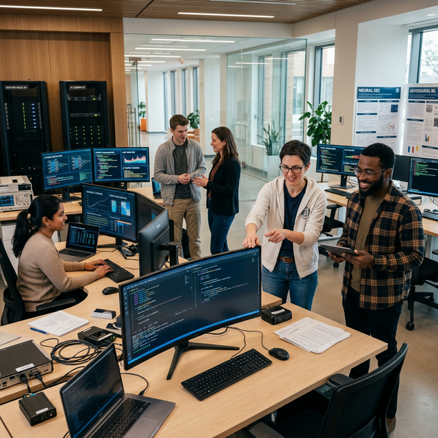

Cybersecurity & Privacy
Verification-driven frameworks for data integrity, quality, and privacy across untrusted and adversarial environments.


Verification-driven frameworks for data integrity, quality, and privacy across untrusted and adversarial environments.
Reliable, robust, and resilient AI/ML models that remain dependable under dynamic and adversarial conditions.


Secure wireless signal collection and Wi-Fi CSI sensing for non-invasive modeling and ubiquitous authentication.
%20and%20authentication%20for%20dark%20theme.png)
%20and%20authentication%20for%20whtie%20theme.png)
Trustworthy data collection and secure system infrastructures for cloud-assisted IoT/CPS platforms.


Post-quantum cryptographic security and quantum machine learning for next-generation trustworthy systems.


Wireless biometric signatures and anonymous authentication schemes for robust, privacy-preserving identity.
Inside the DependSys Research Lab — our collaborative environment for high-impact innovation.

Posters, demonstrations, and project showcases from the lab's research output.